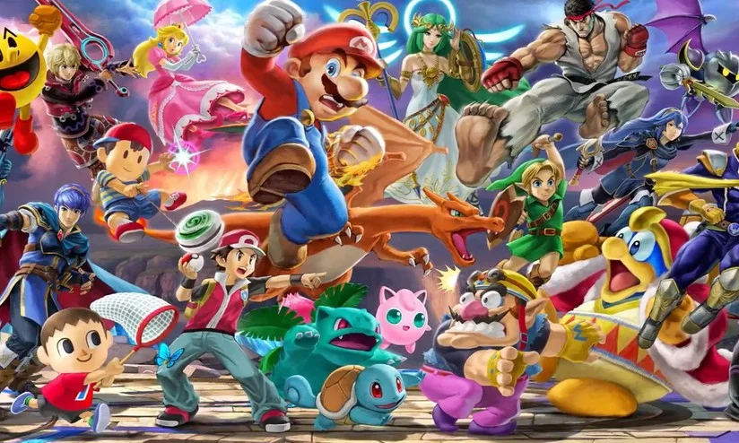

Sobre Mim
Atualmente estou entre o quarto e quinto período do curso de Sistemas da Informação, indo para o sexto. Escolhi essa área porque gosto bastante de tudo que envolve computador, desde jogar, programar e até mexer nas peças, e até agora estou bastante satisfeito com minha escolha! Nas horas livres gosto de jogar ou só falar com amigos no computador e assistir esporte (NBA ou jogo do Flamengo quando tem, por exemplo), mas pretendo voltar a ver séries mais frequentemente também, algo que perdi com a correria da rotina.
Meus Hobbies
Esportes
Ouvir Música
Jogos
Séries/Filmes
Amigos
Top 5 jogos que joguei recentemente
Elden Ring
1
Subnautica
2
RDR 2
3
Dark Souls 3
Civilization 6

Banco de Dados Nintendo
Projeto sobre análise de dados feito na UFF baseado na Nintendo
Descrição:
Recentemente, fiz uma disciplina focada em análise de dados que tinha como avaliação final um trabalho. Os grupos deveriam escolher um tema para colher, tratar e analisar os dados a respeito dele. No meu caso, ficamos encarregados de estudar as vendas da Nintendo, contendo a maioria dos consoles e títulos da empresa, assim como as notas, gêneros e entre outras características desses jogos.
Metodologia:
Inicialmente, baixamos o .csv completo das vendas da Nintendo por meio de um site focado em estudo de dados, transformando esse arquivo em um banco de dados. Posteriormente, fomos tratando as informações que tinhamos para remover/atualizar valores, como títulos duplicados, diversas linhas como Null e etc. Por fim, reunimos diversas métricas a partir de análises feitas em cima desse banco de dados no PowerBI, resultando em uma apresentação bem interessante e cheia de curiosidades sobre as vendas da Nintendo.
Entre em Contato!
Caso tenha alguma observação ou dúvida, não hesite em mandar uma mensagem para o desenvolvedor usando o formulário ao lado! Ficarei muito feliz em receber seu feedback ou sanar alguma dúvida que possa ter surgido.